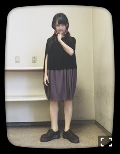
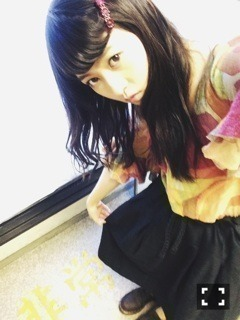

| 2014/09 23 Tue | 共鳴効果。603回目 |
名古屋2日間ありがとうございました！
全国握手会
伊藤ちゃんずレーン！

ねねころ部のみなさんから
万理華ってけっこうおっきいんだね
と言われました。
どうして？と聞くと
寧々の身長に慣れちゃってるから
なんて、、
なんだか微笑ましい気持ちに
なりました。ほっこり。
ねねころ部のみなさん
ありがとうございました！
寧々の隣は落ち着く〜
うしろから抱きしめたくなるね！
握手してる時も可愛い！
来てくださったみなさんにとって
伊藤ちゃんずレーンが特別だった
と思ってもらえたかな。
寧々のためにたくさんの方が
並んでくださって本当に嬉しかった。
そして再び伊藤ちゃんずレーンを
叶えてくださった運営の方に感謝！
この日の夜にみんなで
ご飯食べにいった！
手羽先味噌カツ食べて、
お刺身頼んで、くらげ頼んだよ〜
名古屋飯最高っ
個別握手会
ワンピース Marimekko
ストッキング l'atelier du savon
靴 Dr.Martens(used)

イヤリング Clarie's
中学生の時に買ったもの笑
普通のピンクだったのを
油性のペンでわざと汚したよ〜
トップス
KAREN WALKER RUNAWAY
スカート ？

飴色のバレッタと秋色のトップス
レトロ真っしぐら〜
この格好で喫茶店行きたい。
名古屋2日間来てくださった方も
たくさんいたよー！
お疲れ様でした！
日曜の乃木どこ、
絵がんばりました！
改めて絵を描くことが
好きだと感じました。
もっと自分らしい
絵を極めていきたい。
またブログにも絵載せていくね！
乃木坂美術部とかあったら
部員でひとつの作品作ってみたい。
楽しそう。
今日はお茶会とカルタ会だよっ
楽しんでるよ〜
まりか
コメント(515)
2014/09/23 15:42